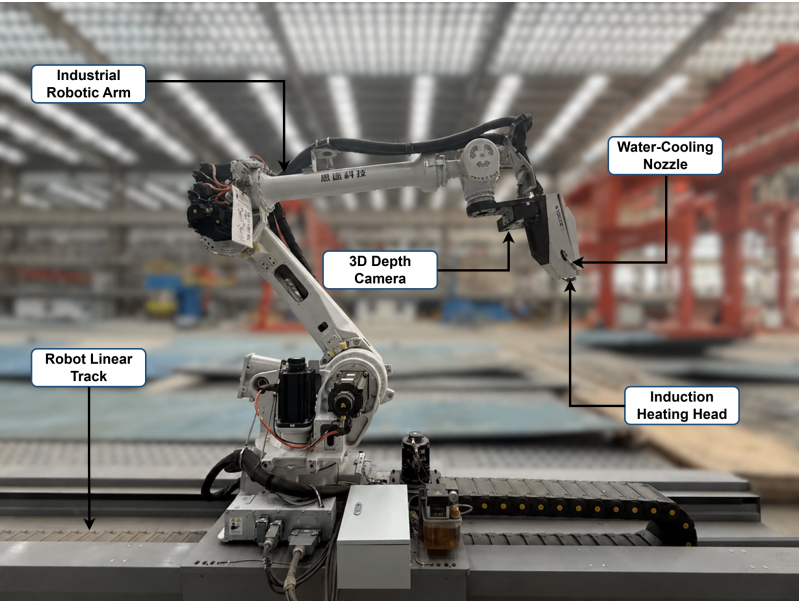

Point-cloud regression for intelligent forming
A Global Process-Guided Multi-Scale Context Network for Predicting Electromagnetic Induction Line-Heating Deformation in Hull Plates

Fig. 11Paper overview
Abstract
Steel plate line-heating forming is an important process in the manufacture of curved hull plates. The deformation of the steel plate is jointly affected by geometric dimensions and heating process parameters. We first model the prediction of electromagnetic induction heating deformation in steel plates as a point cloud regression task jointly driven by “local geometric features and global process features”, and propose a Global Process-Guided Multi-scale Context Network (GPMC-Net). We design an adaptive multi-scale context aggregation module (AMCA) to capture the local deformation gradient in the heating line neighborhood, the spatial correlation between different regions, and the overall bending trend of the steel plate. Additionally, we design a global process-guided skip attention module (PSA) to enable the network to adaptively adjust the feature recovery process according to different steel plate geometries and heating processes, thereby improving the prediction ability of the overall deformation patterns and local displacement distributions.
We conduct comparative experiments on our Induction Line Heating Plate Displacement Dataset (ILH-Plate). The experimental results show that GPMC-Net achieves the best performance across all evaluation metrics. Compared with the MinkUNeXt backbone network, GPMC-Net reduces the mean absolute error in the Z direction and three-dimensional displacement vector by 35.26% and 35.36%, respectively. Further real experiments on electromagnetic induction line heating demonstrate that GPMC-Net identifies the primary bending direction, extreme position, and overall deformation trend under actual processing conditions, confirming its ability to capture the main spatial deformation characteristics. These results demonstrate its potential to support steel plate line-heating process planning, parameter optimization, and intelligent forming. Our source code and demonstration video are publicly available at https://yz-331.github.io/-GPMC-Net-/.